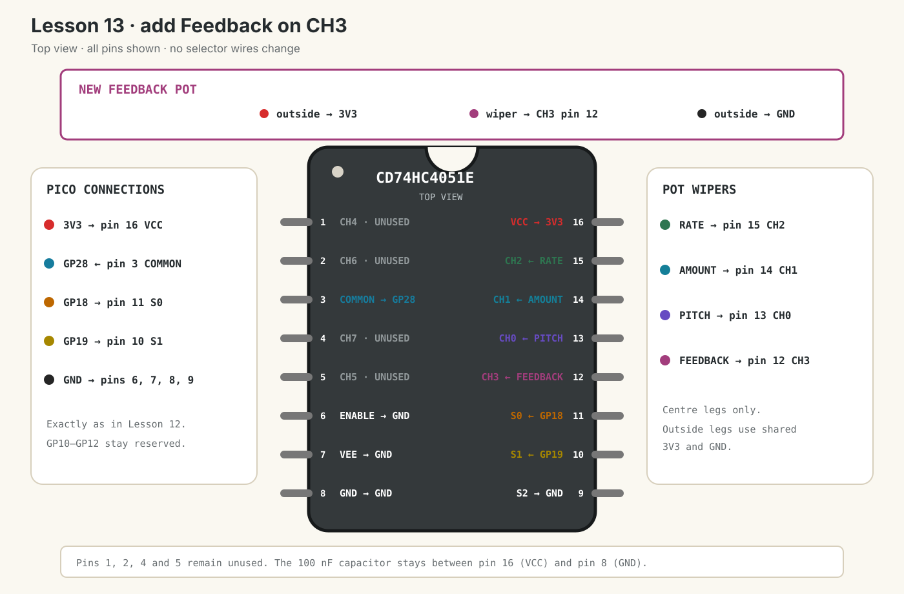

Dub Siren V3 · lesson 0013
Add Feedback on CH3
Add the fourth potentiometer without adding another Pico selector wire.
1. CH3 uses both selector bits
S2 remains grounded. S1 and S0 already provide four combinations, so CH3 needs no new selector wire:
| S2 | S1 | S0 | Channel | Control |
|---|---|---|---|---|
| 0 | 0 | 0 | CH0 · pin 13 | Pitch |
| 0 | 0 | 1 | CH1 · pin 14 | Amount |
| 0 | 1 | 0 | CH2 · pin 15 | Rate |
| 0 | 1 | 1 | CH3 · pin 12 | Feedback |
CH3 is binary 011. S2 is 0, S1 is 1 and S0 is 1.
3 & 1 for S0 and (3 >> 1) & 1 for S1.
Show answer
3 & 1 = 1 and (3 >> 1) & 1 = 1. Both selector outputs go high.
2. Add Feedback with USB unplugged
Use one of the two remaining purchased B10K linear potentiometers.
- Unplug the Pico’s USB cable.
- Connect one outside Feedback leg to the same shared 3V3 rail as the other pots.
- Connect the other outside Feedback leg to the same shared GND rail as the other pots.
- Connect the Feedback centre wiper to 4051 CH3 pin 12.
- Keep S0 pin 11 on GP18, S1 pin 10 on GP19 and S2 pin 9 on GND.
- Keep every Lesson 12 connection unchanged.

3. Extend the scheduled scan
Run this main.py:
from machine import Pin
from picozero import Button, LED, Pot
from time import sleep_ms, ticks_add, ticks_diff, ticks_ms
led = LED(15)
button = Button(14)
mux_adc = Pot(28)
# S2 stays on GND. S1 and S0 can select CH0 through CH3.
mux_s0 = Pin(18, Pin.OUT)
mux_s1 = Pin(19, Pin.OUT)
PITCH_CHANNEL = 0
AMOUNT_CHANNEL = 1
RATE_CHANNEL = 2
FEEDBACK_CHANNEL = 3
MUX_SETTLE_MS = 2
CONTROL_SCAN_MS = 20
pitch_value = 0
amount_value = 0
rate_value = 0
feedback_value = 0
last_pitch_hz = -1
last_amount = -1
last_rate = -1
last_feedback = -1
last_change = ticks_ms()
light_on = False
next_control_scan = ticks_ms()
mux_waiting = False
mux_channel = PITCH_CHANNEL
mux_started = ticks_ms()
def select_mux_channel(channel):
mux_s0.value(channel & 1)
mux_s1.value((channel >> 1) & 1)
def start_mux_read(channel):
global mux_channel, mux_started, mux_waiting
mux_channel = channel
select_mux_channel(channel)
mux_started = ticks_ms()
mux_waiting = True
def finish_mux_read():
global amount_value, feedback_value, mux_waiting
global next_control_scan, pitch_value, rate_value
reading = mux_adc.value
if mux_channel == PITCH_CHANNEL:
pitch_value += (reading - pitch_value) * 0.1
start_mux_read(AMOUNT_CHANNEL)
elif mux_channel == AMOUNT_CHANNEL:
amount_value += (reading - amount_value) * 0.1
start_mux_read(RATE_CHANNEL)
elif mux_channel == RATE_CHANNEL:
rate_value += (reading - rate_value) * 0.1
start_mux_read(FEEDBACK_CHANNEL)
else:
feedback_value += (reading - feedback_value) * 0.1
mux_waiting = False
next_control_scan = ticks_add(ticks_ms(), CONTROL_SCAN_MS)
while True:
now = ticks_ms()
# Job 1: scan all four pots through GP28.
if not mux_waiting and ticks_diff(now, next_control_scan) >= 0:
start_mux_read(PITCH_CHANNEL)
if mux_waiting and ticks_diff(now, mux_started) >= MUX_SETTLE_MS:
finish_mux_read()
# Print only when one of the controls changes enough to be useful.
pitch_hz = int(100 + pitch_value * 900)
if (
abs(pitch_hz - last_pitch_hz) >= 5
or abs(amount_value - last_amount) >= 0.03
or abs(rate_value - last_rate) >= 0.03
or abs(feedback_value - last_feedback) >= 0.03
):
print(
"Pitch:", pitch_hz, "Hz",
"Amount:", round(amount_value, 2),
"Rate:", round(rate_value, 2),
"Feedback:", round(feedback_value, 2),
)
last_pitch_hz = pitch_hz
last_amount = amount_value
last_rate = rate_value
last_feedback = feedback_value
# Feedback is only measured in this lesson.
# Rate controls LED speed; Amount controls LED brightness.
if button.is_pressed:
interval = int(500 - rate_value * 450)
if ticks_diff(now, last_change) >= interval:
light_on = not light_on
last_change = now
led.value = amount_value if light_on else 0
else:
led.off()
light_on = False
last_change = now
sleep_ms(1)The one new scan step
elif mux_channel == RATE_CHANNEL:
rate_value += (reading - rate_value) * 0.1
start_mux_read(FEEDBACK_CHANNEL)Lesson 12 ended the scan after Rate. Lesson 13 starts one more read instead. Only after Feedback is read does the code schedule the next complete scan.
4. Test independence
- Reconnect USB and run the code.
- Turn Feedback slowly. Only
Feedbackshould move from about 0.00 to 1.00. - Turn Pitch. Only the Pitch number should make a large change.
- Hold Trigger and verify Amount still changes brightness.
- Verify Rate still changes flash speed.
- Leave all pots still. Values should remain stable apart from tiny ADC changes.
Feedback works backwards
Unplug USB and swap only Feedback’s two outside wires. Keep the centre wiper on pin 12.
Feedback changes another value
Check that its centre wiper reaches pin 12. Then recheck Pitch pin 13, Amount pin 14 and Rate pin 15.
Feedback stays near one number
Unplug USB and reseat all three Feedback wires. Confirm the centre leg is the wiper and the two outside legs reach different power rails.
Done means
- Four potentiometers share GP28.
- Feedback’s centre wiper reaches CH3 pin 12.
- You know CH3 selects S1 = 1 and S0 = 1.
- Feedback prints independently from Pitch, Amount and Rate.
- GP10–GP12 remain free.
Tell your teaching agent: whether Feedback moves from about 0.00 to 1.00 clockwise, and whether every control remains independent.